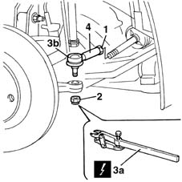

4110B10 steering links - r+r on vehicle - check tow-in/tow-out separately
- Path
- Procedures > 41 STEERING > 4110 STEERING CONTROL AND LINKAGE > 4110B steering control linkage > 4110B10 steering links - r+r on vehicle - check tow-in/tow-out separately
- Kind
- repair procedure (removal / refitting; the operation number is the code)
- Applies to
- all engines; all production periods
- Interactive page
- https://sloeber94.github.io/elrnDB-fMltpl/en/#/2891680
Applies to: all engines; all production periods
 Removing
Removing
 Refitting
RefittingPlace the car on a lift.
4450B12 front or rear wheels (two) - r+r
Measure the length of the steering rods to be used for refitting.
1. Loosen the nuts securing the steering rods.
2. Undo the nuts fixing the track rod end to the steering knuckle.
3. Using the tool (3a), separate the track rod end (3b) from the steering knuckle.
4. Undo the rods from the power steering box and remove them.
 | Name | Country |
|---|---|---|
3a | Head extractor | 1.847.035.000 |

Applies to: all engines; all production periods
Refitting
RemovingTighten the steering rods to torque on the power assisted steering box.
 | Fastening | Component | Ø | Value (daNm) |
|---|---|---|---|---|
- | Nut | ADJUSTABLE STEERING LINKS | M14 x 1.5 | 5 |
Join the track rod ends to the steering knuckles and tighten the fixing nut to torque.
| Fastening | Component | Ø | Value (daNm) |
|---|---|---|---|---|
- | Nut | ADJUSTABLE STEERING LINKS | M10 x 1.25 | 4 |
Check that lengths of the adjustable steering rods are the same as those measured during the removal.
Tighten the adjustable rod nuts to torque.
4450B12 front or rear wheels (two) - r+r
Lower the lift and remove the vehicle.